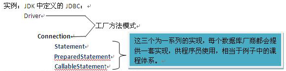

无论使用何种设计语言，都需要使代码实现更加便于维护、重用度高等特点，而代码重用便是提高代码质量的重要标识。为了实现更好的代码重用，即定义一次，使用多次，产生了方法学，面向对象OOP和面向过程OPP都是方法学的一种。而之后围绕方法学便产生了设计原则，面向接口编程，高内聚低耦合都是设计原则。由此在不违背设计原则的基础之上，设计模式应运而生，它遵循设计原则，解决特定的问题。它不是为了实现代码的功能，而是为了实现代码的复用，它是围绕复用而产生的。 设计原则是95年有GOF（四人帮）出版的《设计模式》一书中指出，书中说明了23中常见问题的解决方式，被称为23种设计模式。
在下面我们主要介绍三中最常见的设计模式：
上下文：在某个应用中只允许得到某个类的单个实例。
注：说到单例一定会想到线程安全问题，所以实现单例模式的类一定要是线程安全 的。
使用单例模式的情况：首先单例可以符合业务的需求，例如：Spring是业务层的框架，管理的是业务层的实例，业务层符合代码的开闭原则，把变化的代码和不变的代码分开处理，使用了service和dao，这两种组件通常能够设为单例的，因为dao为线程安全的，不会产生线程安全问题，并且处理业务的组件设为单例的，完全可以完成业务需求。使用单例模式，不是为了节省内存而产生的。
Hibernate中的SessionFactory必须是单例的，因当使用session来处理事务的时候，调用一次Dao和第二次调用Dao必须是同一个session。如下：
实现转账：
class Dao{
public void qu(){
//实现取款
}
public void cun(){
//实现存款
}
}
class Service{
public void zhuan(){
//实现转账的业务逻辑
One. qu(450);//先调用一个账户的dao中的取款
Two. cun(450);//在调用另外一个账号的dao中的存款
}
存取款必须作为一个事务来处理，这时如果qu和cun方法中使用的不是同样一个session，转账就会出现问题，这事便必须使用单例模式。
实现单例模式一般有两种方法：懒汉式和饿汉式
所谓“懒汉式lazy”与“饿汉式eager”的区别，是在与建立单例对象的时间不同。 “懒汉式”是在你真正用到的时候才去建这个单例对象：
比如：有个单例对象
private static Student student = null； //不建立对象
Student getInstance(){
if(student == null) { //先判断是否为空
student = new Student(); //懒汉式做法
}
return student；
}
“饿汉式”是在不管你用的用不上，一开始就建立这个单例对象：
比如：有个单例对象
private static Student student = new Student（）； //建立对象
Student getInstance(){
return student； //直接返回单例对象
}
工厂模式有三种实现：
上下文：一个接口多种固定的实现，客户期望动态的决定或得哪种实现，最终实现了复用实例化对象的复杂过程。
案例：学生选课系统
达内培训的课程学完之后有几种证书：Programer Deveplor Designer 它们是根据学习的周期而定的。
这三种证书都是继承自Course课程
首先看下面的设计模式：
学生需要通过自己的课程知道自己可以获得哪种证书
public class Student{
int mouth;
public int getLevel(){
Course course；
if(mouth==2){
course=new Programer();
}else if(mouth==3){
course=new Deveplor ();
}
//……………….
}
}
这样学生便可以根据学期来知道自己的证书。
但是如果老师也想知道学生最后是哪种证书，必须在Tecther类中重新写一遍上面学生类中的红色的代码。这样不能很好的实现代码的复用。
class CourseFactory {
public static Course course(int mouth){//作用：生成Course
If(mouth==1){
// …..
}//….
}
}
在应用中的实例:
Calendar cal=Calendar.getInstance();//根据用户的区域实现具体的日历实现
有缺陷：他必须要用几个固定的实现类，当实现类不足以满足要求，需要客户扩展的话，还需要修改工厂类的方法，造成后期维护的麻烦。所以产生了下面的模式：多态工厂模式。
这种工厂模式可以使用读取配置文件的方式来实现，方式与简单工厂类似。
Connection connection=DriverManager.getConnection();
Hibernate：SessionFactory Session
集合：Collection Iterator
上下文：产品系列的多种实现，
案例：课程设计系统，如上面的例子，还有一家培训机构，培训与达内培训类似的课程（Programer Deveplor Designer），但是课程内部的实现一定不同，即课程体系有多种实现。
Connection 和下面的三个实现便是抽象工厂模式。
上下文： 限制客户对服务的访问或使客户能访问无法直接访问的服务。
案例：我们假设有一个用户管理模块，实现了用户的添加，删除，修改的功能，我们需要使用代理模式来查看用户是否有权限做着一些类操作该如何实现呢？
Class User{
}
//设计一个dao来实现对User的增删
Interface UserDao{
addUser(User u);
deleteUser(User u);
}
当然这个dao接口还有一个实现类UserDaoImpl,实现了增删方法
在调用的时候便通过UserDaoImpl来实现功能。
我们在这里还需要给用户在访问前增加权限的过滤，有一定权限的用户，在能执行特定的操作。但是维护期间又不希望修改原来的业务代码，这时候需要使用到代理模式。 代理类书写如下：
Public class UserDaoProxy implements Userdao{
//与UserDaoImpl实现同一个接口，因为它是UserDaoImpl的实现类
Private UserDaoImpl udao；
Public UserDaoProxy(UserDaoImpl udao){
This.udao = udao;
}
Public void addUser(User u){
//实现权限的验证
//权限通过执行下面操作
Udao.addUser(u);
}
Public void deleteUser(User u){
//实现权限的验证
//权限通过执行下面操作
Udao.deleteUser(u);
}
}
}以上是常用的三种设计模式，在以后的文章中会陆续为大家介绍其他的设计模式，要达到设计模式的灵活运用还需要大量程序代码的积累，希望同学们在日常的学习中勤敲代码，才能更多更好的理解设计模式，以及java编程中的其他知识。